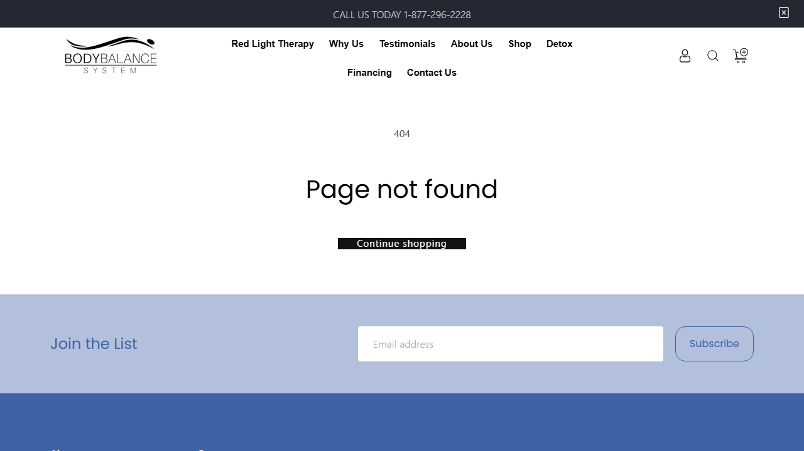
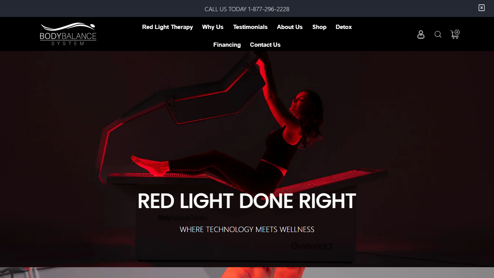
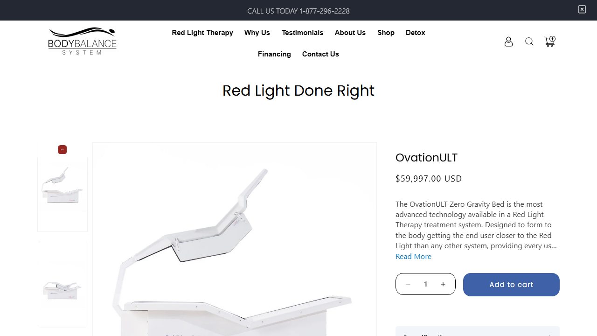
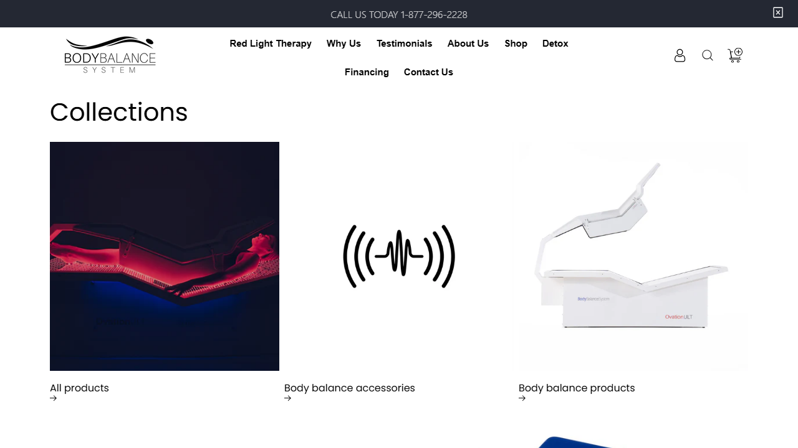
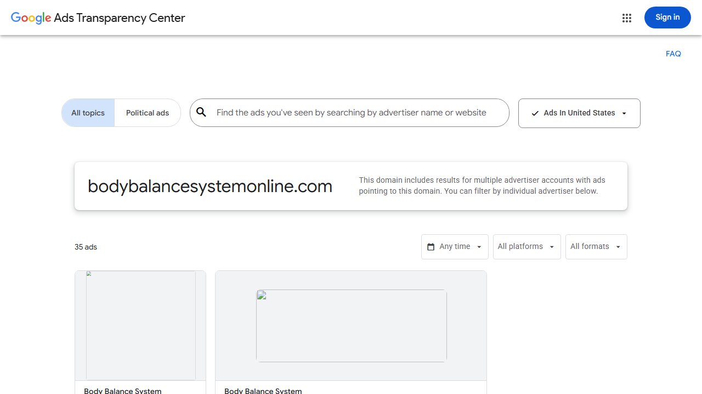

Executive Growth Review
Start here: executive summary, priority decisions, information needed, and next steps.
Open executive reviewRevenue Audit Dashboard
Evidence-backed audit of the live site, public SEO surfaces, lead paths, and public ad transparency data. Findings below include proof links and a severity score from 1 to 10.
The site has enough product proof to sell, but interested buyers are being sent to broken, confusing, or incomplete next steps.
Important: public Google Ads Transparency confirms ads exist for the domain, but it does not report clicks, cost, CTR, conversions, keywords, or targeting. Any ad performance claims must be verified inside the ad accounts before being treated as final.
Start here for the ad strategy, competitor sales playbook, and revenue growth plan. All three pages are linked and ready for review.
Start here: executive summary, priority decisions, information needed, and next steps.
Open executive review15 original Body Balance ad concepts built from current red light therapy ad patterns.
Open ad reviewWho the category winners are, how they run, and how they appear to generate sales.
Open winners breakdownAI chatbot, landing pages, quote flows, financing, follow-up, retargeting, and tracking.
Open growth planScreenshots were taken from the live site during this audit.

Example tested URL: /blogs/resources-3/red-light-therapy-pricing. Fix with 301 redirects or restore the missing article.

The first screen says "RED LIGHT DONE RIGHT" but does not show a direct quote, financing, or consultation action above the fold.

The OvationULT page shows the $59,997 price and Add to cart button. Add quote, financing, and specialist call CTAs beside this area.

Both /collections and /collections/ load public collection-list pages. Choose one canonical version.

Google Ads Transparency shows public ad records for the domain. It does not prove clicks, costs, leads, or profitability.
These are the problems most likely to stop a qualified buyer from becoming a lead or customer.
ProofDirect checks returned 404 for internal links such as red-light-therapy-pricing, fda-registered-meaning, how-to-add-rlt-to-medspa, photobiomodulation-mechanism, and peer-reviewed-research. These links appear inside live content on the homepage and resource sections.
ImpactVisitors researching pricing, FDA registration, medspa implementation, and photobiomodulation hit dead pages instead of moving toward trust and purchase readiness.
FixIn Shopify, create 301 redirects for every broken /blogs/resources-3/... URL listed in this report. If a matching article exists, redirect to it. If no matching article exists, redirect to /blogs/resources. Then search Shopify theme/content for /blogs/resources-3/ and replace those links with the final live URLs. Afterward, each listed URL must return 301 or 200, not 404.
ProofThe homepage opens with "RED LIGHT DONE RIGHT" and "WHERE TECHNOLOGY MEETS WELLNESS" on the live homepage. The HTML also contains "Promote your products" and "Click Here To Find Out How" as video overlay text, not as clear primary lead buttons.
ImpactPaid traffic has seconds to understand the offer. The current first screen does not immediately say commercial red light therapy beds, who they are for, what action to take, or why the buyer should engage now.
FixChange the homepage hero headline text to Commercial Red Light Therapy Beds for Wellness Practices. Under it, add one sentence: USA-made red light therapy and ionic detox systems for practices, spas, recovery centers, and wellness businesses. Add a primary button above the fold labeled Request a Quote linking to the final contact page. Add a secondary button labeled Compare Systems linking to /collections/all-products.
ProofThe OvationULT product page shows "Regular price $59,997.00 USD," quantity controls, and "Add to cart." The strongest financing and consultation actions are not placed beside the price. I confirmed the product can be added to the Shopify cart, so the problem is not a broken cart button. The problem is that a high-ticket buyer is being pushed toward checkout before quote, financing, or consultation options are made clear.
ImpactA buyer considering a capital equipment purchase usually needs financing, install fit, ROI math, proof, and a consultation before checkout. A standard ecommerce CTA can suppress qualified leads.
FixOn /products/ovationult, add three buttons directly beside or below the $59,997 price: Request a Quote to the final contact page, Apply for Financing to the Reliant application or final financing page, and Talk to a Specialist to the final contact page. Move Add to cart below those buttons or label it as secondary.
These defects reduce organic visibility, split authority, or waste high-intent search demand.
ProofDirect HTML check on the homepage found one H1 element with empty text. The visible hero copy is not the page H1.
ImpactThe homepage loses a basic topical signal for commercial red light therapy beds and ionic foot detox systems.
FixEdit the homepage template so the visible main headline is the only H1. Use this H1 text: Commercial Red Light Therapy Beds and Ionic Foot Detox Systems. Do not leave the logo or hidden header as an empty H1.
ProofMultiple variants return 200 and self-canonical, including /pages/about-us, /pages/about-us-1, /pages/about, /pages/contact-us, /pages/contact-us-1, /pages/contact, /pages/financing, /pages/financing-1, and /pages/financing-2. The pages sitemap lists several of them.
ImpactGoogle receives multiple versions of the same intent. Authority and engagement split across stale pages, and buyers can land on weaker versions.
FixChoose one live URL for each page type and redirect the rest. Use /pages/about-us for About, /pages/contact-us or /pages/contact-us-1 for Contact, and /pages/financing-1 for Financing. Add 301 redirects from the unused versions to the chosen version. Update the header, footer, sitemap, and all internal links to use only the chosen versions.
Proof/pages/financing has H1 "Clinical Research" and empty meta description. /pages/about also has H1 "Clinical Research" and empty meta description. /pages/red-light-therapy has no H1 and empty meta description. /pages/store-locator has no H1 and empty meta description.
ImpactSearch snippets and page-topic signals are weak on pages that should capture commercial and navigational demand.
FixUpdate these exact SEO fields in Shopify. /pages/financing H1 should be Equipment Financing or redirect it to /pages/financing-1. /pages/about H1 should be About Body Balance System or redirect it. /pages/red-light-therapy needs one H1: Red Light Therapy Systems. /pages/store-locator needs one H1: Therapy Locator or redirect it to the active locator page. Add a unique meta description to every page kept live.
ProofThe public sitemap lists URLs like copy-of-red-light-therapy-beds-for-your-business-landing-page, copy-of-red-light-therapy-pads-for-your-business-landing-page, and copy-of-detox-for-better-health-landing-page.
ImpactDraft URL naming reduces trust, dilutes topical focus, and can be used accidentally as paid ad destinations.
FixDo not leave URLs containing copy-of public. For each copy-of page, either rename it to a clean final URL or create a 301 redirect to the final page. Example: redirect /pages/copy-of-red-light-therapy-beds-for-your-business-landing-page to a clean URL such as /pages/red-light-therapy-beds-for-business. Confirm no copy-of URLs remain in the sitemap.
ProofThe product sitemap includes /products/anxiety, /products/arthritis, /products/depression, and /products/pain. Anxiety and arthritis use the same meta description: "Red Light Therapy... improve unwanted conditions within the body." Depression and pain have empty descriptions.
ImpactThese pages may attract sensitive medical-condition searches while using thin or duplicate metadata. That creates SEO quality risk and advertising compliance risk.
FixDecide whether condition pages like /products/anxiety, /products/arthritis, /products/depression, and /products/pain should exist. If they are not real products, 301 redirect them to a relevant education page or collection page. If they stay live, remove medical cure/treatment language, add unique meta descriptions, add citations, and have compliance review the copy.
ProofA public sitemap crawl of sitemap.xml found 46 live pages with empty meta descriptions and 10 live pages with missing or empty H1 text. Examples include /blogs/resources, /blogs/resources-3, /pages/contact-us-1, /pages/red-light-therapy, and /pages/news.
ImpactWeak titles, empty descriptions, and missing H1s reduce the chance that buyers understand and click the correct search result.
FixExport all Shopify pages, blogs, collections, and products. Fill in three fields for every page kept public: Page Title, Meta Description, and H1. If a page is not meant to be public, 301 redirect it to the best live page or remove it from navigation and sitemap.
ProofA Lighthouse test run on the live homepage scored Performance 49, Accessibility 83, Best Practices 50, and SEO 85. Key measured issues were Largest Contentful Paint 4.6 seconds, Total Blocking Time 840 ms, Speed Index 15.8 seconds, and Time to Interactive 21.1 seconds.
ImpactSlow pages reduce paid ad conversion rates, especially on mobile. Buyers may leave before the page becomes easy to use.
FixCompress and resize homepage hero/media images, lazy-load below-the-fold images and videos, remove unused Shopify apps/scripts, defer noncritical JavaScript, and rerun Lighthouse until Performance is at least 75 on mobile and 85 on desktop.
ProofThe Lighthouse homepage audit failed the image-alt check: "Image elements do not have alt attributes." The public homepage tested was https://bodybalancesystemonline.com/.
ImpactMissing or generic alt text weakens accessibility and can reduce image/search context for product-heavy pages.
FixReview homepage and product template images. Product images should use clear alt text like OvationULT red light therapy bed. Decorative icons should use empty alt text alt="". Do not use generic alt text like Image.
ProofBoth /collections and /collections/ load public collection-list pages.
ImpactThis is a lower-priority duplicate URL issue, but it adds to the overall sitemap/canonical cleanup problem.
FixChoose one version, preferably /collections. Add a 301 redirect from the other version to the chosen version and use the chosen version in internal links.
Public ad libraries can prove whether ads exist, but not whether ads generated clicks, leads, sales, or profitable traffic. That requires ad account access or exports.
Google Ads Transparency Center showed 35 ads associated with bodybalancesystemonline.com during this audit. This proves Google has public ad records for the domain.
It does not show clicks, CTR, cost, conversions, keywords, match types, search terms, audiences, negative keywords, placement quality, landing page performance, or management fees.
The public Meta Ad Library search for "Body Balance System" did not return verifiable results in this audit environment. Use this Meta Ad Library search link manually or request Meta Ads Manager read-only access.
The public-site audit can prove site issues. A final revenue diagnosis requires these exports from the ad, analytics, commerce, and lead systems.
Without these files, nobody can accurately say whether the main problem is ad targeting, tracking, landing pages, sales follow-up, pricing, or offer-market fit.
This is the clean path to follow. Do not spend more money driving traffic until the broken pages, unclear next steps, and tracking gaps are fixed.
copy-of.Request a Quote button on the first screen of the homepage.Request a Quote, Apply for Financing, and Talk to a Specialist next to the price.Add to cart, but do not make it the only obvious next step for a high-ticket product.Each item below has a plain pass/fail check.
| Priority | Fix | Why it matters | How to confirm |
|---|---|---|---|
| Fix Now | Create 301 redirects for broken /blogs/resources-3/... links. | Visitors researching pricing, FDA registration, medspa setup, and clinical topics are hitting 404 pages. | Open each old URL. It should load a live page or redirect to one. It should not show "Page not found." |
| Fix Now | Change homepage headline and add a visible Request a Quote button above the fold. | The first screen needs to explain the offer quickly and give interested buyers a direct next step. | Open the homepage on desktop and mobile. Without scrolling, it should say what is sold and show the quote button. |
| Fix Now | Add quote, financing, and specialist-call buttons beside the OvationULT price. | A $59,997 product needs a sales path, not just an ecommerce cart button. | Open /products/ovationult. The three sales buttons should appear beside or directly under the price. |
| Fix Next | Fix the homepage H1. | The homepage currently has an empty H1, which weakens the main page signal for search engines. | Inspect the page. There should be exactly one non-empty H1: Commercial Red Light Therapy Beds and Ionic Foot Detox Systems. |
| Fix Next | Redirect duplicate About, Contact, Financing, and Collections URLs. | Duplicate pages split search signals and make site maintenance messy. | Only one final URL should remain for each page type. Old versions should 301 redirect to the final version. |
| Fix Next | Remove or redirect all public URLs containing copy-of. | Draft-looking URLs reduce trust and should not appear in search or ads. | Open the sitemap and search for copy-of. There should be zero results. |
| Fix Next | Fill missing page titles, meta descriptions, and H1s. | Search results need clear titles and descriptions so buyers know which result to click. | Every public page kept in the sitemap should have a unique title, meta description, and visible H1. |
| Cleanup | Improve homepage speed. | Slow pages lose paid and organic visitors before they can take action. | Rerun Lighthouse. Target at least 75 Performance on mobile and 85 on desktop. |
| Cleanup | Fix image alt text. | Missing image descriptions hurt accessibility and weaken product context. | Rerun Lighthouse. The image-alt issue should be gone. |
| Needs Access | Connect ad, analytics, form, phone, and sales data. | Without this, no one can accurately say whether the problem is ads, landing pages, tracking, follow-up, pricing, or offer fit. | Produce a report showing spend, clicks, leads, calls, form submissions, booked calls, and sales by source. |
| Source | What it proved |
|---|---|
| Homepage | Hero message, empty H1, and broken internal resource links. |
| Financing page | Financing "Click Here" points to the contact page without the sales form. |
| OvationULT product page | $59,997 price, add-to-cart focus, limited quote/financing support near price. |
| Sitemap index and pages sitemap | Duplicate/stale page variants and copy-of landing pages are public/sitemap-listed. |
| Robots.txt | Public crawl rules allow normal product, collection, page, and blog crawling. |
| Google Ads Transparency Center | Public ad library showed 35 ads associated with the domain; no performance metrics are exposed. |
| Meta Ad Library help | Meta confirms its Ad Library shows active ads, but public performance data is limited. |
| Google Ads Transparency Center announcement | Google explains the transparency center is for seeing advertiser ads, not private performance reporting. |
| Local dashboard preview screenshot | Proof the dashboard renders locally. |
| 404 screenshot | Visual evidence that a tested resource URL returns Page not found. |
| Homepage screenshot | Visual evidence of the above-the-fold homepage message and CTA area. |
| OvationULT screenshot | Visual evidence of price and Add to cart placement on a high-ticket product page. |
| Collections screenshot | Visual evidence of the collections page checked for duplicate URL versions. |
{kind=link}
{kind=link}
{kind=link}
{kind=link}
{kind=link}